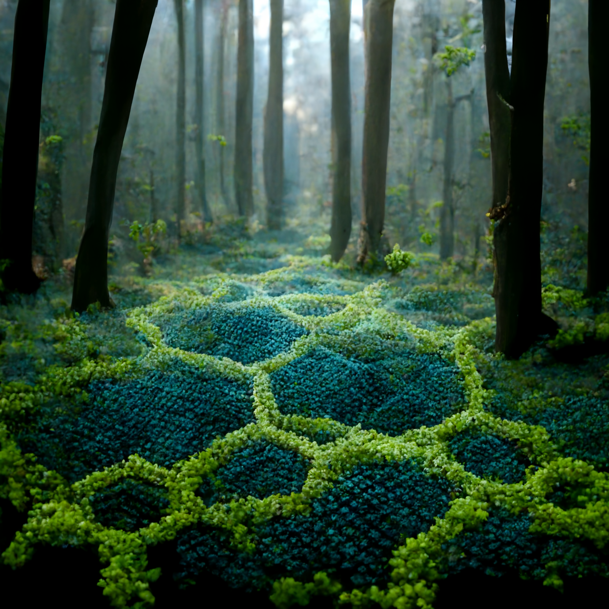
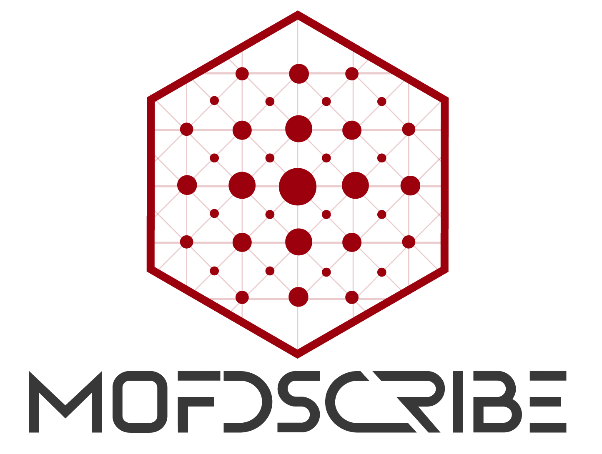
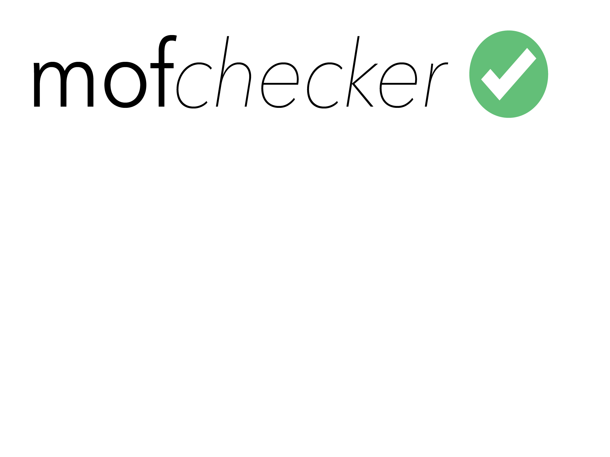
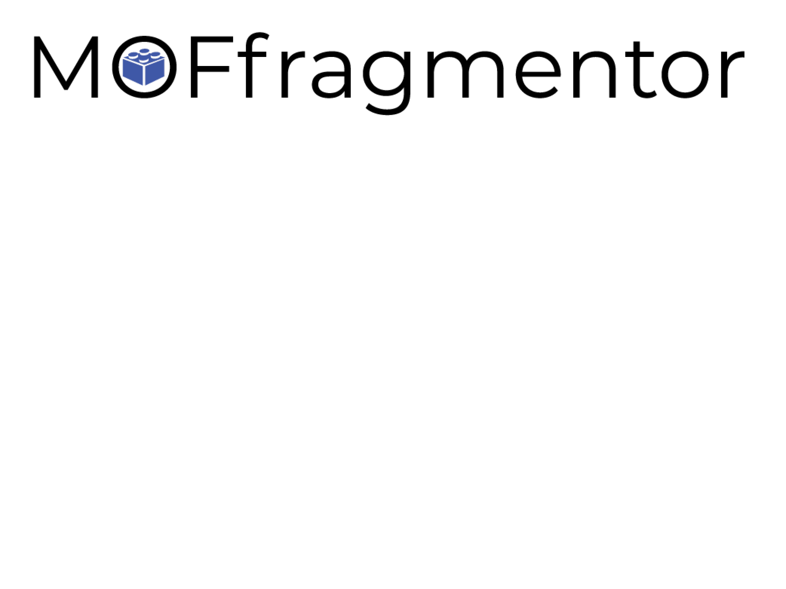
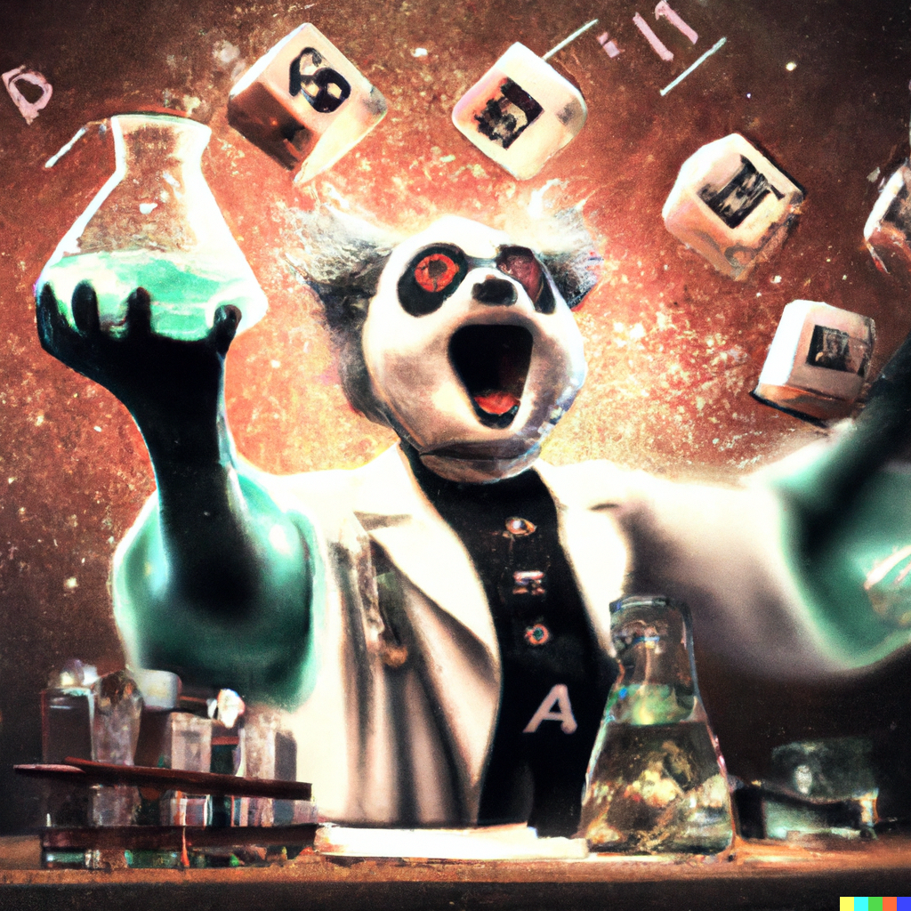
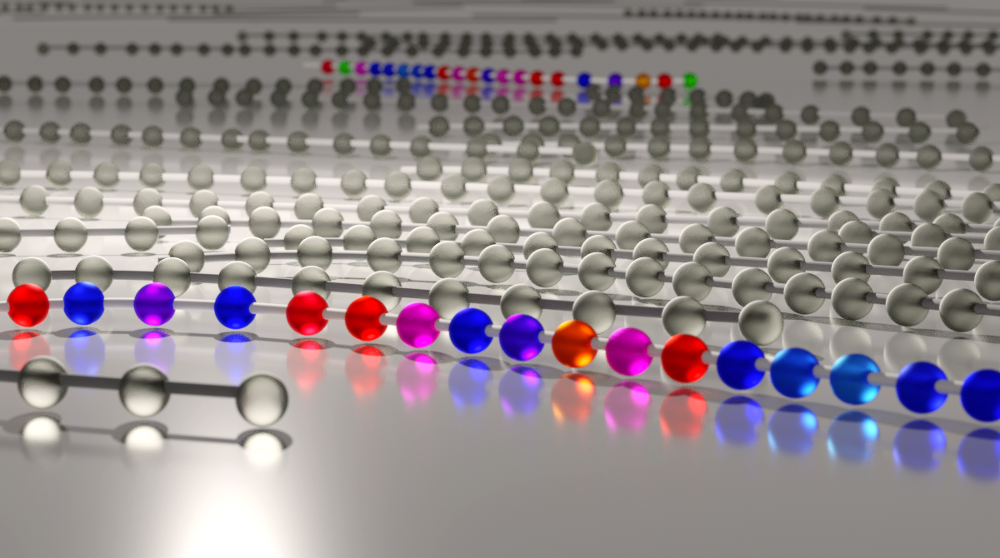
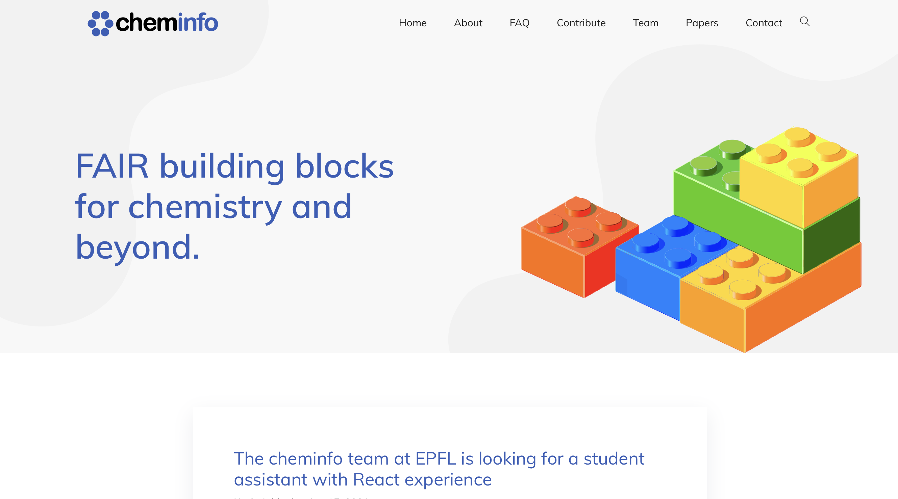

Open Source
I believe that computational science relies on open code on data and subscribe to the Manifesto put out by Jonathan B. Buckheit and David L. Donoho:
An article about computational science in a scientific publication is not the scholarship itself, it is merely advertising of the scholarship. The actual scholarship is the complete software development environment and the complete set of instructions which generated the figures.
– Jonathan B. Buckheit and David L. Donoho
 Digital reticular chemistry – “MOFworld”
I have been very active in developing tools for “digital reticular chemistry” (see also this article by Yaghi and collaborators), i.e., tools for data-driven science with materials such as metal-organic frameworks (MOFs) and covalent-organic frameworks (COFs).
| Name | Description | Other References | |
|---|---|---|---|
|  | mofdscribe | An easy to use tool that accompanies digital reticular chemists on all stages of their work. It provides data sets, more than 40 featurizers, consistent splitting tools to avoid data leakage, as well as tools for evaluating models and comparing them on a leaderboard. | Paper |
|  | mofchecker | The mofchecker is a tool that allows to check the “sanity” of a MOF structure. If implements a range of convenient check, such as checking for missing or overlapping atoms, or unreasonable coordination environment in an easy-to-use interface. Some of the checks also have automatic fixes and are implemented in a graphical interface in an AiiDAlab app. | Web deployment of an earlier version |
|  | moffragmentor | The moffragmentor is a tool that allows to fragment MOF structures into building blocks. | |
|  | element-coder | Element coder is a tool that allows to encode elements into a vector space—but to also decode them back into the original element. This is useful for machine learning applications where one wants to encode elements into a vector space, but also wants to be able to decode them back into the original element (inverse design). |
 Active learning
| Name | Description | Other References | |
|---|---|---|---|
|
|
PyePAL | PyePAL implements the e-PAL algorithm for Pareto active learning. It comes with interfaces for a range of machine learning models, including scikit-learn, GPy, and jax. It generalizes to any number of objectives and also supports batches sampling as well as various schedulers for (re)-training the model. | Paper |
Chemical Data management
I have been an active contributor to the cheminfo ecosystem. For more details about it, you can give our perspective article a look.
Some of my contributions are listed below:
| Name | Description | Other References | |
|---|---|---|---|
| isotherm-analysis |
isotherm-analysis allows to parse and analyze isotherms. It converts from multiple formats to JCAMP-DX and provides utilities for basic analysis.
|
Used in our preprint | |
| pubchem | JavaScript interface to the PubChem API. In the cheminfo ELN, we use this to display safety information. | ||
| xrd-analysis |
xrd-analysis can convert output files from powder-xray diffraction into JCAMP-DX format and perform analysis (Scherrer equation, …) on the diffractograms.
|
Discussed in our perspective | |
| tga-analysis |
tga-analysis provides tools to convert output files from thermogravimetric analysis (TGA) into JCAMP-DX, as well as tools to analyze the data (mass loss analysis).
|
||
| baselines | Baselines provides a collection of baseline correction methods. | ||
|  | cheminfo.github.io | I created the web page for the cheminfo organization, which is a collection of FAIR building blocks for chemistry and beyond. |